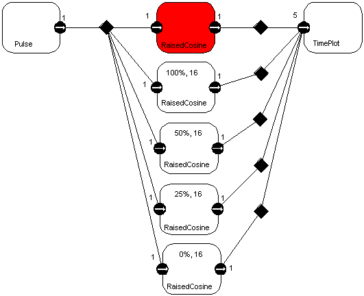

This is implemented in the SDF domain of Ptolemy II, using the following
interconnection of blocks:

The impulse source is an instance of the domain-polymorphic
actor Pulse, the filters are instances of the SDF actor RaisedCosine,
and the plot actor is an instance of the domain-polymorphic actor
TimePlot.
The filter filled in red is the one whose parameters are set
by the boxes in the applet.